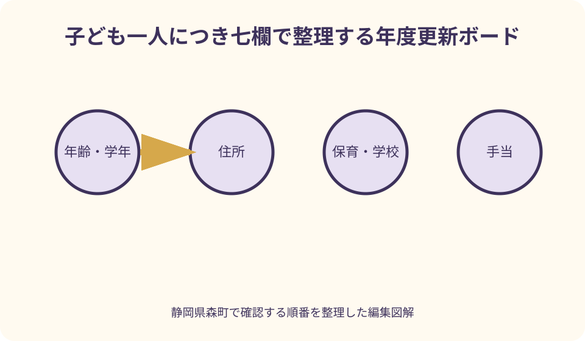
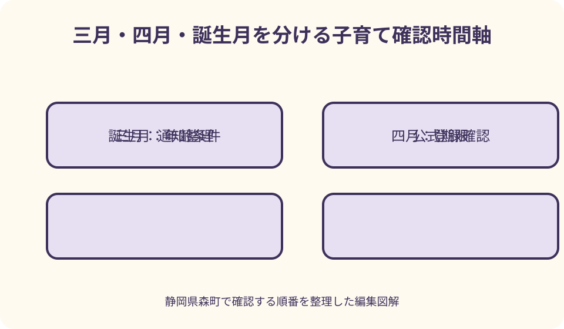

妊娠・子育て手続｜最終確認 2026-08-10
静岡県森町の子育て情報を年度替わりに見直す｜年齢・住所・保育・学校の更新表
子育ての情報は、4月1日に一斉に切り替わるものばかりではありません。学年は年度、健診や予防接種は年齢・月齢、児童手当などは個別の要件、保育の利用は認定や家庭状況と、それぞれ基準が違います。静岡県森町で暮らす家族が、前年の資料を捨てる前に何を照合し、誰へ確かめ、家族の予定へどう戻すかを一つずつ整理します。

編集イラスト年度替わりに見直す範囲を七つに分ける
最初に作るのは、子ども一人を一行にした一覧です。欄は、年齢・学年、住所、保育・学校、手当、健診・予防接種、相談先、家族連絡先の七つにします。兄弟姉妹を一行へまとめると対象年齢や所属が混ざるため、同じ世帯でも行を分けます。
各欄には現在の内容だけでなく、「最後に確認した日」と「次に確認する日」を添えます。年度が変わる直前に見たページでも、その後に更新されることがあります。URLや通知名だけでなく、確認日を残すことで古い情報との混同を減らせます。
見直しの基準日は一つではありません。4月1日、誕生日、転入日、施設の利用開始日、申請日など、項目ごとに違う日付が関係します。「新年度だから全部4月基準」と決めず、公式案内で何の日を基準にするのかを読みます。
一覧の目的は、全てを家族だけで判定することではありません。確定した事実、確認が必要な点、期限のある行動を区別し、相談時に必要な情報を短く伝えるための台帳として使います。
森町公式の入口と更新日を押さえる
森町の子育て情報を探す入口は「森町子育て応援サイト もりっこ」です。妊娠・出産、健康、保育、学校、手当などへ分かれているため、検索結果の一ページだけで完結させず、自分の子どもの年代に関係する分類を横断します。
ページを開いたら、本文だけでなく担当課、問い合わせ先、関連ファイルも確認します。添付PDFとウェブ本文で更新時期が違う場合や、年度名の付いた資料がある場合は、どれが現在の案内か担当へ尋ねる材料にします。
町公式ページの画面を家族へ送るときは、URL、ページ名、閲覧日を一緒に送ります。スクリーンショットだけでは出典と更新状況を追いにくいためです。通知が届いているなら、通知の発行日と対象者も同じメモへ記載します。
この記事の情報確認日は2026年8月10日です。実際に申し込み、予約、受診、届出をする時点では、森町公式サイトの最新版と手元の個別通知を優先してください。
年齢・月齢・学年を別の欄にする
年齢欄には生年月日と年度末時点の年齢を記し、乳幼児では月齢も別に扱います。学校関係の学年、健診の対象月齢、予防接種の対象年齢は同じ考え方ではないため、一つの「年齢」だけで判断しません。
誕生日の前後で対象が変わり得る案内は、いつの時点で対象になるかを本文から探します。見つからない場合は、子どもの生年月日、予定日、転入の有無を伝えて担当へ質問します。家族や友人の経験だけで時期を決めないことが大切です。
兄や姉の前年の予定表は、全体像を知る参考にはなります。しかし年度、実施日、会場、持参物が同じとは限りません。下の子へ流用する際は、対象年度の案内と一項目ずつ照合します。
早生まれなどで学年と満年齢を取り違えやすい家庭は、表の先頭へ生年月日と現在の学年を並べます。窓口へ問い合わせるときも両方を伝えると、どの案内を確認したいのか明確になります。
住所と世帯の変化を先に洗い出す
住所欄には現住所だけでなく、転入日または町内転居日、住民異動の届出状況を書きます。郵便物が届く場所、実際に生活する場所、住民票上の住所が一時的に異なる事情があれば、自己判断で一つにせず担当へ説明します。
年度内に転居した家庭は、保育施設、学校、健診、予防接種、手当の担当へ別々の連絡が必要かを確認します。一つの住所変更届で関係先の登録が全て自動更新されるとは限りません。
世帯構成、保護者の氏名、連絡先、勤務状況が変わった場合も、関係する申請や認定の変更要否を確認します。変更が制度へどう影響するかは個別事情で異なるため、一覧には事実と届出状況だけを書き、結果を先に決めません。
転入直後は前自治体の受診票、予診票、受給状況が手元に残ることがあります。使えるかどうかを見た目で判断せず、森町の担当へ転入日と利用済みの回数を伝え、差替えや照会の方法を聞きます。
保育施設の利用状況を更新する
保育欄には施設名、クラス年齢、認定内容、通常の利用時間、送迎者を書きます。利用申込みの控え、決定通知、就労証明書などは用途が違うため、年度別に分けて保管します。
保護者の勤務先、就労時間、育児休業、復職日、世帯状況に変化があれば、変更届や再認定が必要か森町の保育担当へ確認します。園へ口頭で伝えたことが町への届出を兼ねるとは限りません。
新しいクラスの開所時間、延長利用、休園日、持参物は施設からの案内で確認します。前年の送迎時刻をそのまま使わず、通勤経路と家族の担当を実際の時間で組み直します。
入所申込み中の家庭は、希望を書いたことと利用決定を分けて記録します。年度替わりに申し込めば必ず希望施設を利用できるとは限らないため、結果通知前の予定には代替の送迎・預かり案も残します。
学校の通知と家庭予定を照合する
学校欄には学校名、学年、学級、登下校方法、学校から指定された連絡手段を記します。就学や転校に関する町の通知が届いた場合は、宛名、対象年度、提出期限、問い合わせ先を表へ写します。
新学期の日程、持参物、給食、集団登校、緊急連絡は、学校や町教育委員会から届く最新案内を優先します。検索で見つかった過年度資料は、今年度も同じだとみなさず比較用に留めます。
放課後の居場所や送迎が必要な家庭は、学校の終了時刻だけでなく、保護者の退勤時刻、バスや車の移動時間、きょうだいの迎えを一つの時間軸へ置きます。予定が重なる日は、代わりに動ける人を先に決めます。
食物アレルギー、服薬、配慮事項などは、家庭の判断だけで旧年度の書類を流用しません。学校が求める様式と提出時期を確認し、医療上の内容は必要に応じて医療機関へ相談します。
児童手当などの通知を読み直す
手当欄には制度名、対象の子ども、申請・届出日、通知日、次回確認日を書きます。振込額だけを記録すると、どの期間や子どもに対応するのか分からなくなるため、通知の名称と対象期間も残します。
こども家庭庁は児童手当の制度情報を公開していますが、森町での申請先、必要書類、個別の届出は町公式案内を照合します。国の概要だけで自分の受給可否や金額を確定させません。
出生、転入・転出、氏名や住所、養育状況などに変化があったときは、届出の要否と期限を担当へ確認します。「役場には別件で伝えたから反映済み」と推測せず、該当制度の記録で確かめます。
前年に受給していたことは、翌年度の全条件が同じである保証にはなりません。制度改正、家庭状況、手続状況によって扱いが変わり得るため、最新の町通知と国の案内を読みます。
健診の案内と受診記録をそろえる
健診欄には、森町から届いた案内名、対象となる子ども、予定日、会場、受診済みかどうかを書きます。母子健康手帳の記録と通知を見比べ、未記入だから未受診とは決めず、手元の結果票も探します。
森町の子どもの健康診査案内は、対象や日程を知る入口です。実施日、受付、持参物などは最新ページと個別案内を確認し、体調や受診可否について迷う場合は案内された窓口や医療機関へ相談します。
欠席した健診、転入前に受けた健診、里帰り先で受けた確認がある場合は、受診日と自治体・医療機関名を記録します。その情報を森町へ伝え、次の案内や記録の扱いを確認します。
健診結果の数値を家族だけで比較し、成長や健康状態を断定することは避けます。日常で気になる様子があれば、年度の一斉見直しを待たず、かかりつけ医や町の相談先へ具体的な経過を伝えます。
予防接種は接種済み記録から照合する
予防接種欄は、母子健康手帳などの接種済み記録を起点にします。ワクチン名、接種日、回数、医療機関を写し、手元の予診票や案内と照合します。記憶だけで「済み」「未接種」を決めません。
定期接種の対象年齢や接種間隔はワクチンごとに異なります。厚生労働省の予防接種情報と森町の案内を確認し、不明点は医療機関または町の担当へ相談してください。この記事から個別の接種時期は判定しません。
転入、紛失、記録の空欄、海外や町外での接種がある場合は、その事情を分けて伝えます。記録がないことと未接種であることは同じではないため、確認できる書類や医療機関名を集めます。
任意接種と定期接種を同じ欄に置く場合は、種別を明記します。費用や助成の有無も年度や条件で変わり得るので、予約前に森町公式案内と実施医療機関の説明を確認します。
母子健康手帳を年度台帳の中心に置く
母子健康手帳は妊娠・出産から子どもの健康記録をつなぐ資料です。年度替わりには、健診、予防接種、成長記録のページを見ながら、別に届いた通知との対応を確認します。
森町の母子健康手帳交付案内は、妊娠届や交付時の説明を確認する一次情報です。すでに交付を受けた家庭も、住所変更や紛失など別の事情が生じた場合は、必要な相談先を町へ確かめます。
手帳に空欄があっても、保護者が推測で医療記録を書き足すことは避けます。受診先や接種先に記録が残っている可能性を確認し、どこまで照会・再記載できるかを担当者へ相談します。
持ち出す機会が多い資料なので、保管場所と持ち出した人を家族で共有します。ただし内容には健康情報が含まれるため、全ページを無制限に撮影・共有せず、送付先を限定します。
相談先を用件別に書き分ける
相談先欄は「役場」とだけ書かず、担当課・係、用件、電話番号、受付の案内ページを分けます。保育、学校、手当、健診では担当が違うことがあるため、同じ質問を一か所へまとめて投げない方が答えを得やすくなります。
問い合わせ前には、子どもの生年月日、住所、対象年度、届いた通知名、確認したい事実を用意します。質問を「どうすればいいですか」だけにせず、「この通知は今年度のどの手続に使うか」のように絞ります。
回答を得たら、確認日時、担当部署、回答の要点、次の行動を記録します。担当者の個人名を外部へ公開する必要はありません。家族内で経過をたどれる程度の情報を残します。
相談先が分からないときは、もりっこの分類や各ページの問い合わせ先から入口を探します。緊急性のある健康・安全上の問題は、通常の年度確認とは分け、状況に応じた救急・医療・警察等の連絡先を優先します。
家族連絡先を役割と一緒に更新する
家族連絡先欄には、氏名と電話番号だけでなく、平日昼間に連絡がつく時間、迎えに動ける範囲、子どもとの関係を書きます。番号が有効でも応答できなければ、緊急時の連絡網として十分とは限りません。
保育施設や学校へ届け出ている連絡先と、家庭内のスマートフォンに保存された番号を照合します。機種変更や勤務先変更があった場合は、施設側の登録変更が必要か確認します。
家族以外を緊急連絡先や送迎者にする場合は、本人の同意、施設の登録方法、引き渡し時の本人確認を確かめます。家族が口頭で頼んだだけで送迎できるとは限りません。
連絡網には、第一連絡先が出ない場合の順番を明記します。災害や通信障害も考え、集合場所、伝言手段、紙で持つ最小限の連絡先を家族で決めておきます。
三月・四月・誕生月に確認を分散する
一度に全項目を調べると、期限と単なる確認事項が混ざります。三月は届いた通知と翌年度予定、四月は施設・学校の実際の連絡、誕生月は年齢条件のある健診・接種など、確認日を分散します。
ただし実際の締切がこの区分に従うわけではありません。町や施設から示された期限があれば、家庭で決めた見直し日より優先します。表には公式の期限と家庭内の作業日を別の列で記します。
月末や連休前に手続が集中しそうなら、問い合わせだけ先に済ませます。必要書類の取得先、提出方法、受付時間が分かれば、家族の担当を割り振りやすくなります。
誕生日を基準にする項目は、誕生日当日だけを見るのではなく、対象期間の開始と終了を確認します。案内の表現が読み取りにくい場合は、生年月日を伝えて担当へ確認します。

通知・申請控え・記録の置き場所を決める
紙の資料は「未対応」「提出済み」「結果待ち」「記録」の四つへ分けます。届いた順ではなく状態別に置くと、提出済みの通知を未処理と誤認したり、未提出の紙を保管済みと思ったりする混乱を減らせます。
データは子どもの名前、年度、分野、日付が分かるファイル名にします。写真だけを保存する場合も、通知の表裏、添付資料、封筒の問い合わせ先を一組にします。
提出物は、受取控えや送信記録を保存できるか確認します。個人番号や健康情報を含む資料は、家族の共用チャットや誰でも見られるクラウドへ無造作に置かず、アクセス範囲を絞ります。
古い年度の資料は直ちに捨てるのではなく、保存の必要性を確認します。不要と判断した個人情報は適切に処分し、比較のため残す案内には「過年度」と大きく記します。
一覧化する良い点
七つの欄に分ける良い点は、家族が「何となく新年度準備をする」状態から、期限、未確認、担当を見える形へ変えられることです。全てを覚えておく負担が減り、途中から別の家族が引き継ぎやすくなります。
年齢と年度を分けることで、健診・予防接種と学校・保育の予定を混同しにくくなります。同じ子どもの予定でも基準が違うと気付けば、古い通知をそのまま流用する誤りを避けられます。
住所や世帯の変化を一か所へ集めると、どの制度へ変更確認が必要かを洗い出せます。一つの届出が全てへ反映されると思い込まず、担当別に確認できます。
確認日を残す習慣は、翌年度の比較にも役立ちます。前回の記録は正解の保存版ではなく、「前年から何が変わったか」を探す索引として利用できます。
公式案内へ注文したい点
注文したい点は、子育て情報が目的別・担当別のページに分かれ、家庭から見ると一年の全体像を一画面で追いにくいことです。年度、年齢、住所変更のどれが基準かをページごとに読み分ける必要があります。
添付ファイルに年度名があっても、ページ本文の更新日や対象期間が分かりにくい場合があります。利用者側は資料名と確認日を記録し、不明な組み合わせを具体的に窓口へ伝える必要があります。
相談先の電話番号が掲載されていても、何を準備して質問すればよいかまでは十分に分からないことがあります。生年月日、住所、通知名、希望する行動を最初に伝えられる簡潔な質問例があると、往復を減らせます。
一方で、公式ページに書かれていないことを利用者が推測で埋めるのは危険です。「記載がないから不要」「昨年と同じはず」とせず、未確認として残すのが現実的です。
年度が変わっても継続を保証できない理由
制度、対象範囲、日程、申請様式、施設の運用は変更されることがあります。そのため、前年に利用できた手当、健診、保育サービスが翌年度も同じ条件で続くとはこの記事から保証できません。
家庭側の条件も変わります。子どもの年齢、住所、世帯、保護者の就労、利用施設が変われば、必要な届出や案内が異なる可能性があります。前年の結果だけを根拠にしないでください。
ウェブページの更新と個別通知の発送には時差が生じることも考えられます。内容が食い違って見える場合は、両方の名称と日付を示して担当へ確認します。都合のよい方だけを採用しません。
年度台帳の「確定」欄にも確認日と根拠を添えます。後日案内が更新されたら、古い記録を消すのではなく、変更日と新しい根拠を追記します。
転入・転出が重なる家庭の確認順
森町へ転入する家庭は、転入日、前住所地、子どもの生年月日、利用中または希望する施設を最初に整理します。住民異動とは別に、保育、学校、手当、健診、予防接種で確認が必要な事項を担当ごとに洗い出します。
前自治体の通知や受診票を持っている場合は、処分せず相談時に示します。森町でそのまま使えるか、差替えが必要か、利用済み記録をどう扱うかは、該当担当の案内に従います。
森町から転出する予定がある家庭も、転出日以降の予約や受診、在園・在学、手当の扱いを事前に確認します。森町での手続が終われば転出先の準備も完了するとは限りません。
引っ越し前後は書類が散らばりやすいため、原本を入れる封筒と、問い合わせ履歴だけを記す一枚を分けます。誰がどの自治体へ聞いたかを家族で共有します。
通知が届かない・見つからないときの切り分け
期待していた通知が届かない場合は、まずその通知が全員へ送られるものか、対象者だけへ届くものかを公式情報で確認します。届かないことだけで対象外とも、郵便事故とも決めません。
住所、転送届、世帯主宛て、施設経由など、通知経路を確認します。家族の誰かが保管していないか、電子連絡に切り替わっていないかも見ます。
紛失した可能性があるときは、通知名、対象の子ども、想定している年度を担当へ伝え、再発行や内容確認の方法を尋ねます。古い画像を印刷して提出できるとは限りません。
問い合わせの結果、まだ発送前だった場合は、予定時期と再確認日を記録します。「待つ」も期限を決めなければ忘れやすいため、家族のカレンダーへ入れます。
家族会議は十五分の更新作業にする
家族会議では七項目を全て議論せず、赤色の期限あり、黄色の未確認、緑色の完了に分けます。最初の十五分は赤色だけを確認し、次に誰が問い合わせるかを決めます。
役割は「調べる人」「窓口へ聞く人」「予定へ入力する人」「書類を保管する人」に分けられます。一人が全てを抱えない一方、最新版の台帳は一つに決めます。
共有文は、結論、未確認、担当、次回確認日の四点で十分です。公式ページの長文を転送するだけでは行動が分からないため、元URLを添えて要点を短く書きます。
子どもの健康や家庭事情など慎重に扱う情報は、共有相手と範囲を限定します。家族連絡網の便利さと、個人情報を広げすぎないことを両立させます。
森町の移動時間を予定へ入れる
森町内でも、居住地区と役場、保健福祉センター、保育施設、学校、医療機関との距離は家庭ごとに違います。受付時刻だけでなく、往復、駐車、きょうだいの送迎に必要な時間を予定へ入れます。
山間部や町外へ通勤する家庭では、急な迎えに対応できる人が限られることがあります。第一連絡先が動けない場合の候補と、施設に登録済みかを年度初めに確認します。
車を使えない日や悪天候も想定し、公共交通、家族送迎、日程変更の可否を調べます。ただし交通時刻や窓口の受付は変わり得るため、実行日に最新情報を確認します。
地域差は制度上の扱いの差として推測せず、移動と連絡に必要な時間の差として予定へ反映します。自宅の所在地を理由に対象可否を決めるのは担当の確認後にします。
個別条件が分からない場合の代案・結論
資料を読んでも個別条件が分からない場合の代案・結論は、対象者、基準日、現在の状況、希望する行動を四行にまとめ、該当担当へ確認することです。長い事情説明より先に、判断に必要な事実を示します。
期限までに必要書類がそろわない場合は、不足書類名、取得先、取得予定日を伝え、相談や受付が可能かを尋ねます。提出できる、期限が延びるなどの結果は記事から断定しません。
窓口へ行くことが難しければ、電話、郵送、オンライン、代理など案内されている方法の有無を確認します。本人確認や委任の条件は手続ごとに異なるため、家族だけで代替方法を決めません。
今年度の案内がまだ公開されていない項目は、前年資料を暫定の準備表として使い、確定欄には入れません。公開予定や問い合わせ先を確認し、再確認日を必ず設定します。
年度更新表の書き方
一行目には子どもの氏名または家庭内の識別名、生年月日、学年、現住所を書きます。二行目以降に項目、公式期限、家庭の作業日、担当者、状態、根拠URL・通知名を並べます。
状態は「未着手」「問い合わせ中」「書類準備中」「提出済み」「結果待ち」「完了」のように具体化します。単に丸印を付けるより、次に何をするかが分かります。
根拠欄には回答者の個人名を外部公開するのではなく、担当部署、確認日時、ページ名を記します。口頭回答は要点を復唱し、自分の理解が合っているか確かめます。
表の末尾には次回見直し日と、緊急で変更が起きたときに開く項目を記します。誕生日、転居、転職、入退園・転校などがあれば、年度末を待たず該当欄を更新します。

固有図解案1：七欄の年度更新ボード
一つ目の図解は、中央に子どもの生年月日と住所を置き、その周囲へ保育・学校、手当、健診・接種、相談先、家族連絡先を配置する円形ボードです。項目同士を混ぜず、同じ子どもへつながることを示します。
各欄には「現在」「根拠」「次回確認」の三段を設けます。制度の説明を詰め込むのではなく、家庭がどこまで確認したかを見渡せる構成にします。
森町らしさは、山間部から町なかの施設へ移動する道を外周に細く描き、移動時間も予定の一部であると表現します。対象地域による制度差を示す図にはしません。
配色は期限ありを赤、未確認を黄、確認済みを緑にします。色だけに頼らず文字ラベルも添え、印刷時や色覚の違いがあっても状態を読めるようにします。
固有図解案2：三月・四月・誕生月の時間軸
二つ目の図解は、三月、四月、誕生月を横に並べ、下段へ公式期限と家庭の作業日を別々に置く時間軸です。年度基準と年齢基準が同じではないことを視覚化します。
三月には通知整理と翌年度資料の探索、四月には施設・学校の登録内容確認、誕生月には健診・接種など年齢条件の再確認を例示します。実際の期限は公式案内へ従うという注記を目立たせます。
住所変更がある家庭向けに、転入・転出日を縦の線で加えます。その線を越えて使う通知や受診票は、担当へ確認するマークを付けます。
家族の担当者を小さなアイコンで配置し、調べる、問い合わせる、提出する、共有するの役割を表します。誰か一人の記憶に依存しない運用を示す図です。
大石の視点：更新表は家族の暮らしを守る引継ぎ帳
大石の視点では、年度更新表の価値は、申請を早く終えることだけではありません。保護者が急に動けない日にも、別の家族が現在地と次の連絡先を理解できる引継ぎ帳になる点が重要です。
森町では、住む場所、勤務先、利用施設によって毎日の移動が違います。制度の一覧だけでなく、誰が何時にどこへ動けるかを書いて初めて、家庭の予定として機能します。
住まいを変える可能性がある家庭も、最初から売却や転居の結論へ急ぐ必要はありません。現住所、施設、学校、通勤、家族の支援範囲を記録すれば、住み続ける場合も移る場合も比較材料になります。
よい記録は、古くならない記録ではなく、古くなったことが分かる記録です。確認日、根拠、次回確認日を一組にし、家族がいつでも公式情報へ戻れるようにしてください。
今日から始める年度替わりの確認
今日行う最初の作業は、子どもごとに七欄を作り、生年月日、学年、現住所、利用施設だけを記入することです。空欄は推測で埋めず、未確認の印を付けます。
次に、もりっこ、健診案内、保育施設案内など該当する森町公式ページを開き、ページ名と閲覧日を書きます。手元の通知と年度・対象者を照合します。
期限がある項目を一つ選び、担当、必要な質問、次の行動を決めます。一日で全分野を完了させることより、最も急ぐ項目の根拠を確定する方が実用的です。
最後に、家族へ「確定したこと」「未確認」「担当者」「次回確認日」を共有します。制度や日程の継続を当然とせず、実行時点の公式情報へ戻る習慣を翌年度にも引き継ぎます。
公式情報・確認先
掲載内容は次の一次情報を基礎に整理しました。営業、料金、催し、交通は変わるため、出発前または手続き前にリンク先で最新情報を確認してください。
- 森町子育て応援サイト もりっこ（静岡県森町、2026-08-10確認）
- 妊娠したら（母子健康手帳の交付）（静岡県森町、2026-08-10確認）
- 子どもの健康診査案内（静岡県森町、2026-08-10確認）
- 保育施設一覧（静岡県森町、2026-08-10確認）
- 子ども・子育て支援新制度 なるほどBOOK（すくすくジャパン）（こども家庭庁、2026-08-10確認）
- 児童手当制度のご案内（こども家庭庁、2026-08-10確認）
- 予防接種情報（厚生労働省、2026-08-10確認）